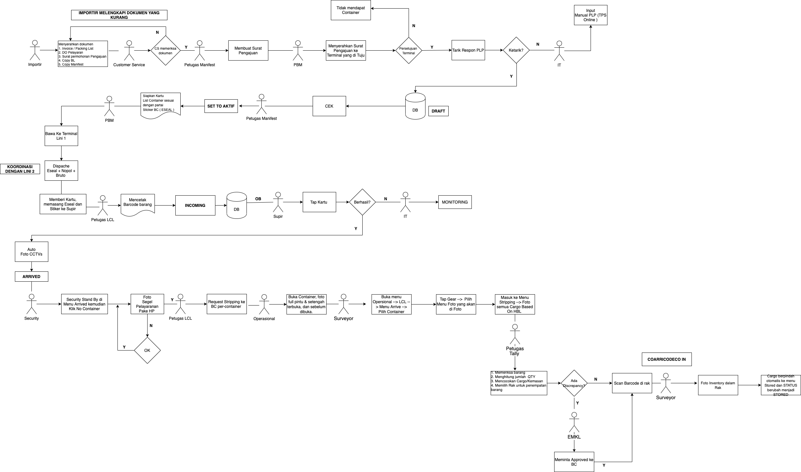
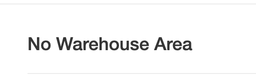

User Guidelines
Alur Kerja IN LCL dari KOJA
Penjelasan Flowchart LCL IN Dari Koja
- Petugas melakukan Request Pengajuan ke Terminal
- selanjutnya adalah membuat surat Pengajuan
- Setelah mendapatkan persetujuan dari Terminal, kemudian Sistem akan menarik Respon PLP. Jika semua data tertarik maka Status akan berubah menjadi DRAFT Jika tidak tertarik secara Otomatis maka Petugas IT akan melakukan Input Manual
- Setelah status di Sistem menjadi DRAFT, maka petugas manifest harus mengubah nya menjadi ACTIVE
- Langkah selanjutnya adalah menyiapkan kartu, List container sesuai dengan partai dan Stiker BC (ESEAL) yang kemudian akan di berikan kepada Petugas Over Bringen untuk di bawa Ke Terminal Lini 1
- Sesampainya di Terminal maka petugas akan melakukan proses (DISPACHE) Eseal, Input No Polisi dan Input Bruto, setelah Selesai Status di Sistem akan berubah menjadi INCOMING
- Status INCOMING menandakan bahwa Container sedang menuju TPS yang di tuju
- Setelah sampai di TPS maka supir melakukan Tap Kartu/ Scan Barcode. Jika berhasil maka akan auto foto CCTVs dan status di Sistem akan berubah menjadi ARRIVED
- Security akan Stand By di menu ARRIVED Kemudian klik No Container lalu mengambil Foto Segel Pelayaran dan Tampak belakang menggunakan HP
- Selanjutnya Petugas LCL harus meminta Ijin Strippinh kepada Petugas BC sebelum memulai Proses Stripping
- Selanjutnya mengambil Foto Container sebelum dibuka, buka setengah, dan buka full
- Selanjutnya Petugas Operasional membuka menu Arrived lalu pilih Nomor Container yang akan di Stripping, Tap Gear untuk mengambil Foto dari masing masing Pilihan
- Selanjutnya Masuk ke menu Stripping, foto masing masing Cargo per-BL
- Selanjutnya Petugas Tally akan mulai menghitung jumlah barang per-Pallet, satuan cargo barang, serta memilih rak untuk penempatan barang
- Apabila terjadi Perbedaan Perhitungan, atau kemasan Petugas Tally harus melaporkan hal tersebut kepada BC dan berkoordinasi dengan Petugas IT
- Setelah semua barang berada di rak dan sama dengan data pada sistem maka petugas harus men-scan barcode rak barang agar barang berada di Stored (COARRICODECO IN)
Proses Tarik Respon PLP
- Proses Tarik Respon PLP
- Importir datang dengan membawa berkas yang kemudian akan di periksa oleh Customer Service kelengkapannya, apabila lengkap maka akan di serahkan kepada Petugas Manifest
- Setelah menerima Dokumen Petugas Manifest akan membuat Surat Pengajuan yang kemudian akan dibawa oleh PBM ke Terminal yang di tuju
- List Barang yang akan masuk akan serahkan ke Petugas IT untuk upload flatfile ke dalam Sistem
- Data yang telah di masukan ke Sistem akan berstatus DRAFT, Petugas Manifest bertugas memastikan jika data yang di Upload masuk sudah benar
- Apabila benar, maka petugas harus menjadikan status dari DRAFT menjadi ACTIVE
- Setelah Status menjadi ACTIVE petugas harus menyiapkan Kartu, List Container sesuai Partai dan Stiker BC yang kemudian akan dibawa oleh PBM menuju Lini 1 untuk melakukan Dipatch, Proses Dipatch dan Input No. Polisi Truck, No Eseal, dan Bruto Container pada Menu Arrived
- Buka Menu Incoming
- Input No Eseal, Bruto dan No Polisi kemudian Save
- Setelah Dispacth, Petugas mencetak Barcode Barang,
- Buka Menu PLP
- Pilih PLP terbaru
- Klik Salah satu Container
- Klik Kemasan
- Tap Gear Pilih Show QRCode


- Setelah sampai, akan sopir tap kartu
- Untuk mengambil foto Segel Pelayaran dan Tampak belakang Contaimer menggunakan HP
- Buka menu Arrived
- Pilih Salah Satu Container
- Tap Gear lalu Pilih Photos
- Tap Gear lalu Pilih Photos lagi

Proses Stripping dan Stored
- Proses Stripping
- Proses Stripping
- Masuk ke Menu Arrived Foto Pintu Tertutup
- Pilih container yang di maksud
- Klik Gear Lalu Klik Photos
- Pilih foto yang akan di upload
- Setelah mendapat Approved Stripping dari BC untuk dapat memulai proses Stripping maka harus mendapat persetujuan dari BC lebih dulu
- Masuk ke Menu Stripping, Pilih Container View Pada menu Gear
- Masuk ke Menu Photos Ambil foto Buka Setengah dan Buka Full
- Masuk ke Menu Stripping, untuk foto masing masing barang
- Seacrh berdasarkan HBL/Partai
- Proses Tally
- Hitung nilai Tally DG per-pallet, kemudian pilih save
- Hitung nilai Pal DG per-pallet kemudian pilih save
- Hasil Tally Barang
- Pilih BL satuan dan Pilih Lokasi untuk penempatan Barang, kemudian pilih save
- Hasil Penempatan Warehouse 
- Apabila terjadi DISCREPANCY maka petugas harus melaorkan ke BC untuk meminta APPROVED
- Setelah DISCREPANCY di APPROVED oleh BC maka Petugas dapat melanjutkan ke proses Stored
- Scan Barcode yang terdapat di Rak merubah status barang menjadi Stored


- Proses Stripping